Pictures, 15 November 2026, of cw-deploys/experiments/brain-bench.html on the Mac. The report is Report-Build-Brain-Bench-01.md, one folder up.
The page was laid out at each size in the app's browser pane, which shows it 800 points wide, so each picture is 800 pixels across: the 1,024 × 768 layout at 800 × 600, the iPad's upright layout (820 × 1,180) at 800 × 1,151. The signal was held at a chosen moment for each picture. The line at the top right of some pictures (first seen, frames a second) is the pane's own reading, not the Mac's; the report has the real ones.
At 1,024 × 768
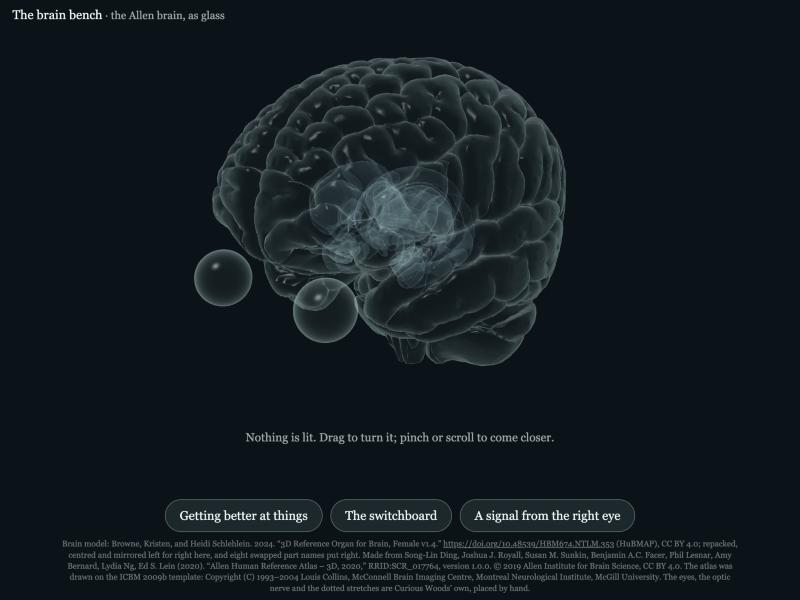
As it opens: front-left, the survey's picture 4, with two glass eyes placed by hand. It turns slowly until touched.
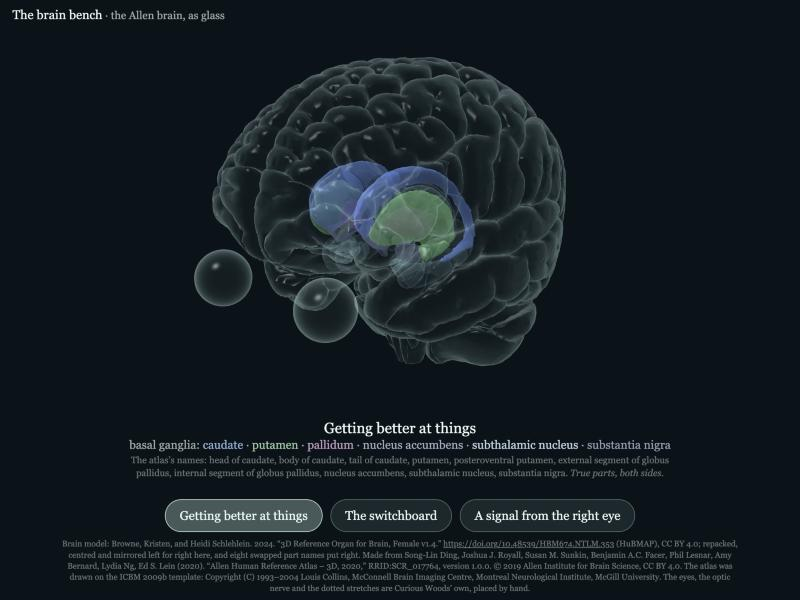
Getting better at things. Caudate blue, putamen green, pallidum rose; the three small partners are below and between them.
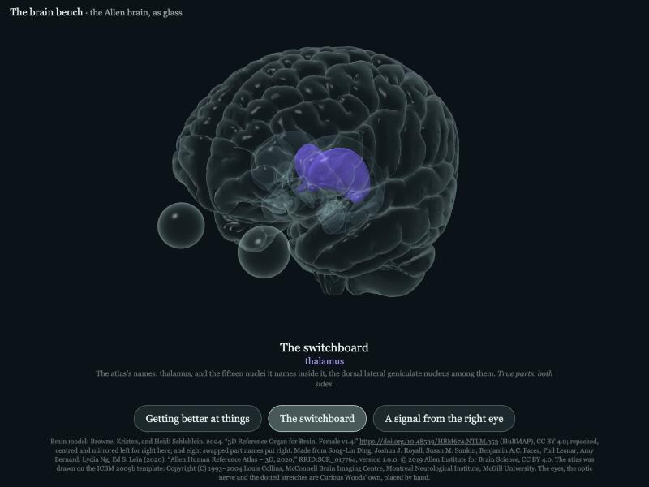
The switchboard: the thalamus, both sides.
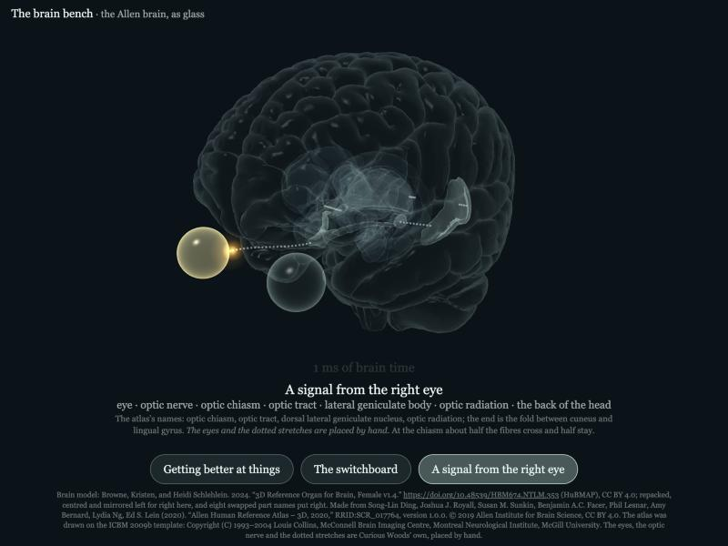
The signal at the right eye (the far one from here). The rest of the brain has dimmed, the road's parts show faintly, and the dots are the stretches drawn by hand.
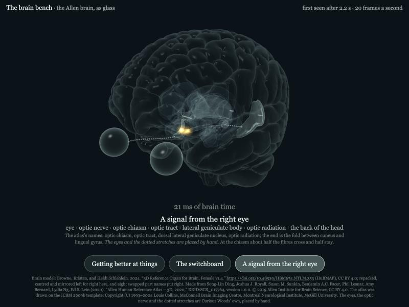
At the chiasm, 21 ms, as it divides.
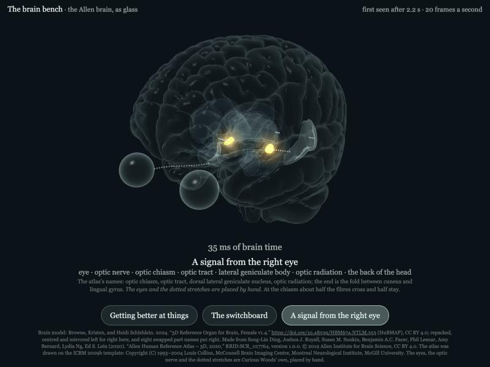
The handoff, 35 ms. Both geniculate bodies brighten as the first pulses arrive and the second leave.
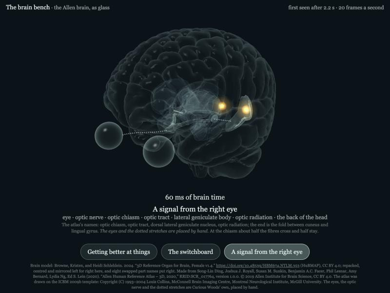
The back of the head, 60 ms: the fold between the cuneus and the lingual gyrus, where the radiation reaches it.
At an iPad's upright size
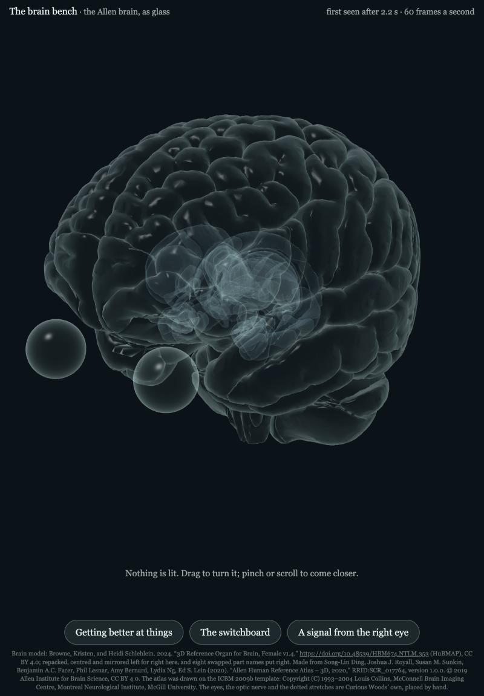
As it opens.
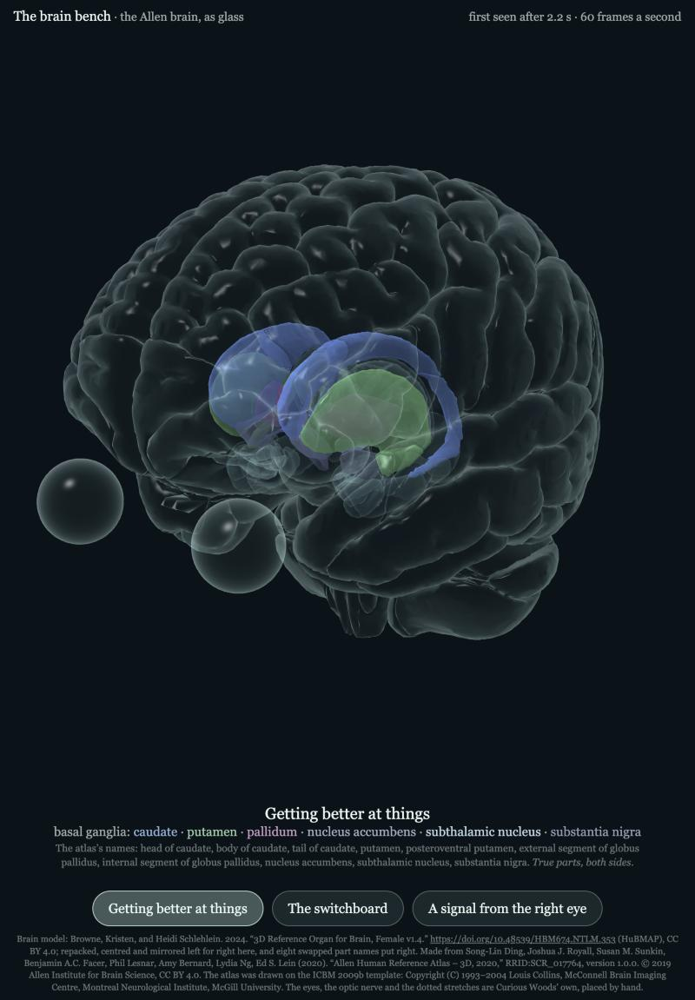
Getting better at things.
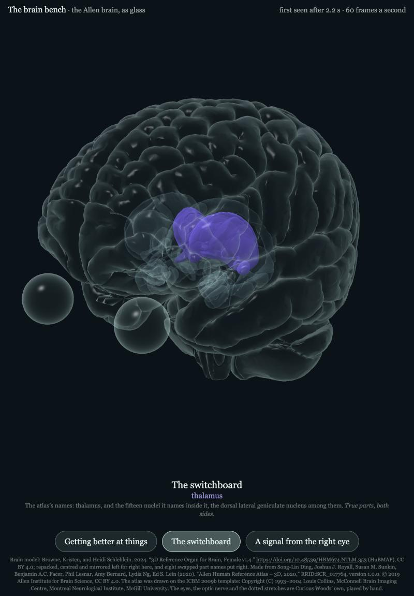
The switchboard.
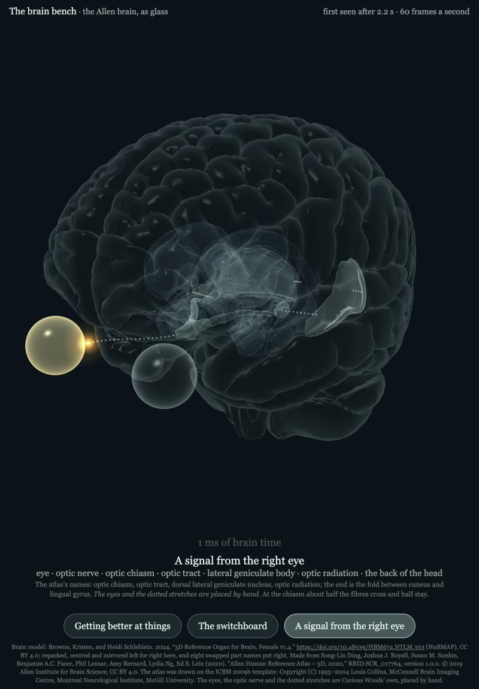
The signal at the right eye.
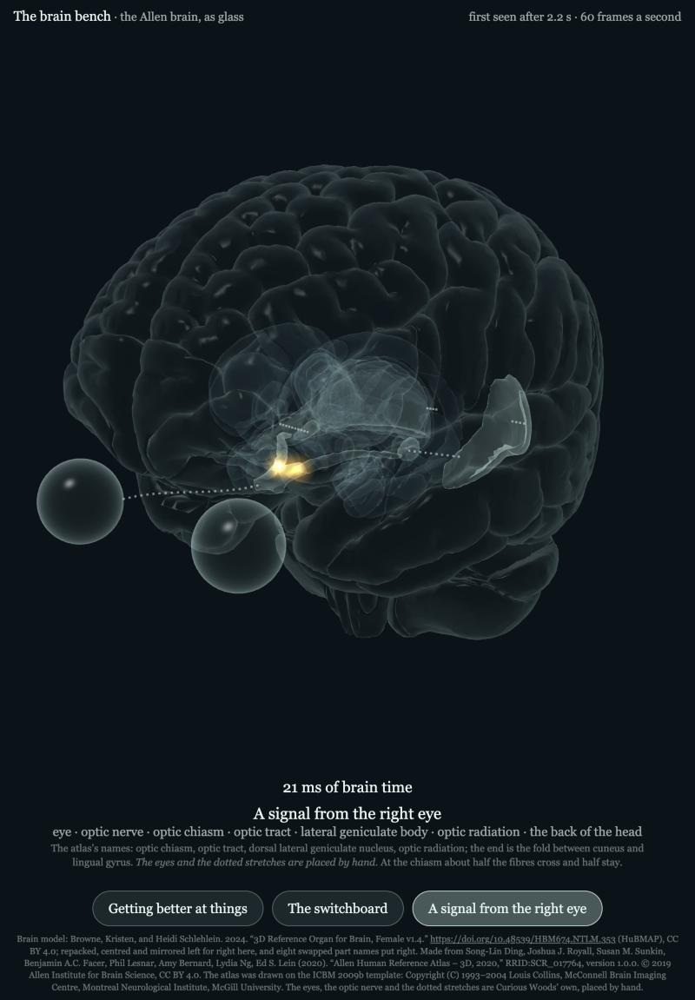
At the chiasm, as it divides.
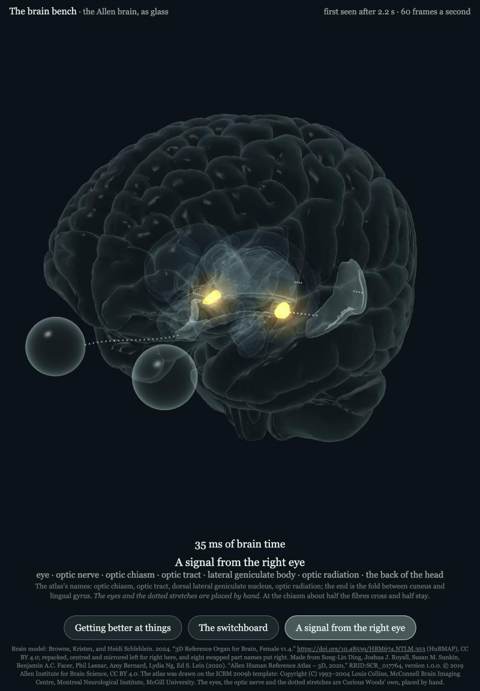
The handoff.
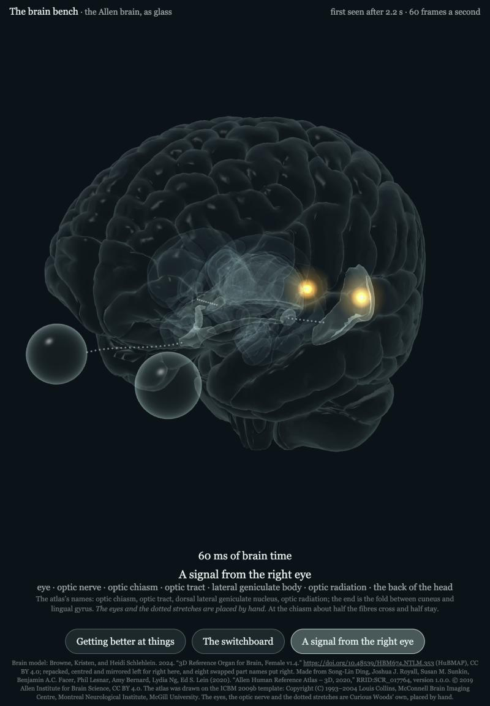
The back of the head.
Three close views of the signal
Turned by hand to look down from the front-right, and brought closer. Taken a little earlier in the session, so a few words under the brain differ from the finished page.
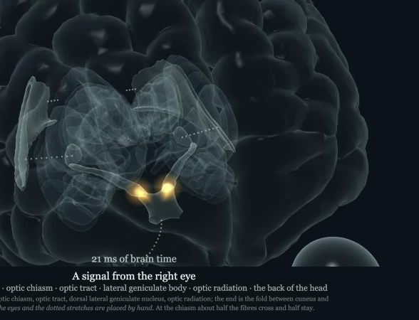
Just after the chiasm, 21 ms. One pulse has stayed on the right; one has crossed. The dots at the bottom are the hand-drawn nerve coming in.
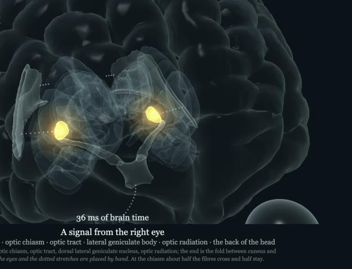
The handoff, 36 ms. Each geniculate body is lit; the dots lead from it across to the radiation.
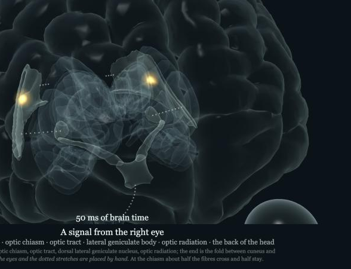
50 ms. The second pulses are inside the two optic radiations, on their way back.